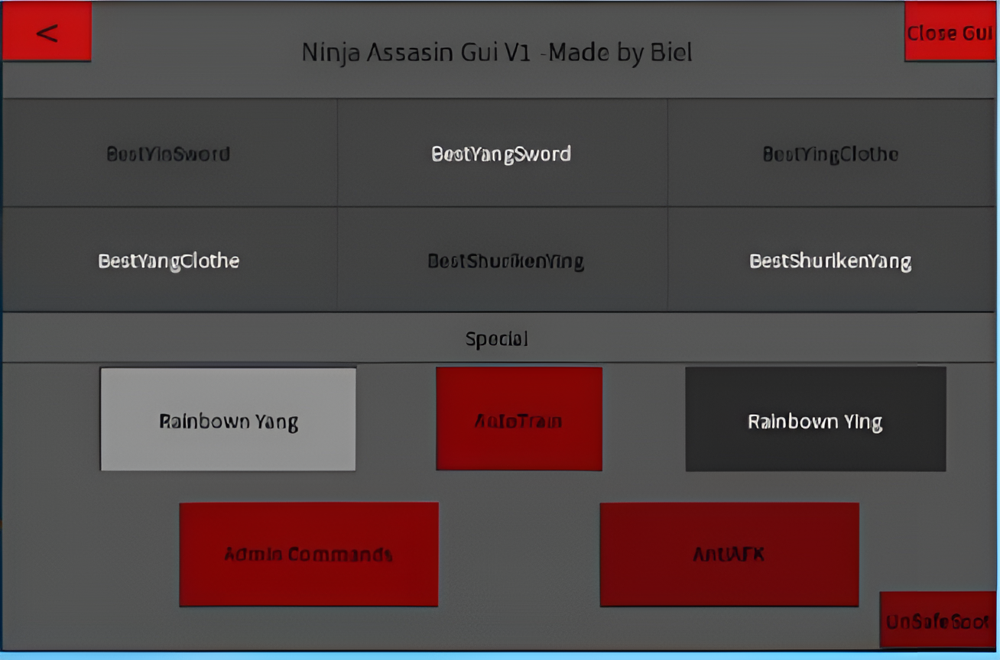
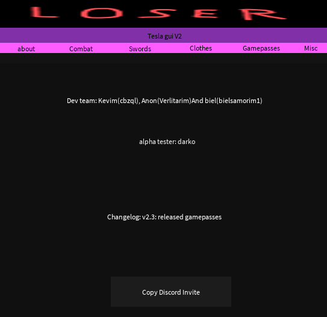
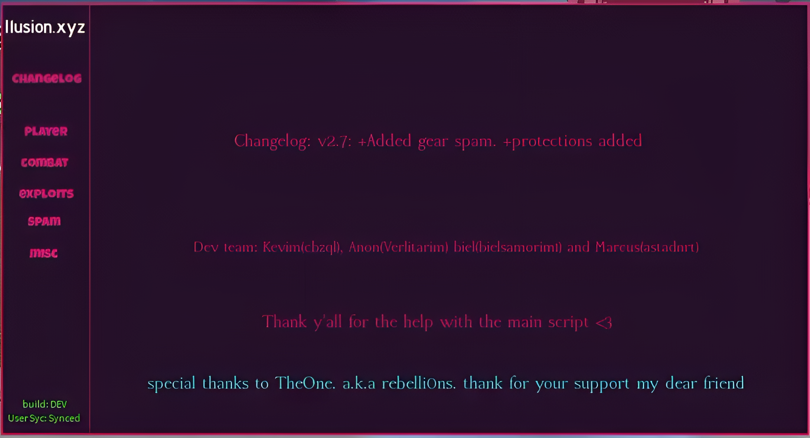
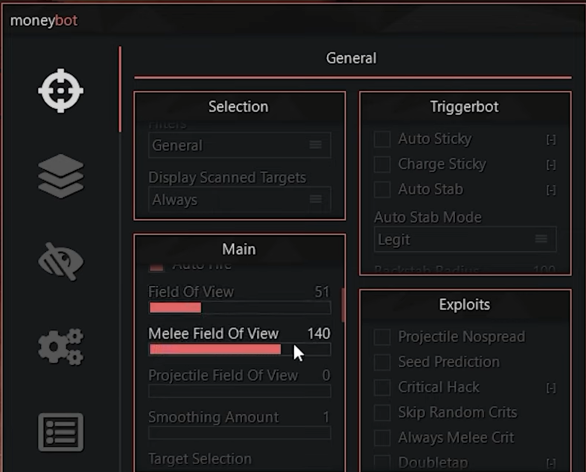

Olá e bem-vindo. Agradeço pela visita aqui.
Então, aqui vou contar um pouco sobre meus projetos pessoais. Minha jornada começou com scripts para Roblox.
Criei e desenvolvi o script chamado Ilusion.xyz.
Ilusion foi meu maior projeto até agora. Desenvolvi com a ajuda do meu amigo Anon, que é um desenvolvedor
talentoso em Lua e HTML.
O hack teve algumas versões diferentes, três no total, e, entre elas, havia diferenças de interface e de funcionalidades.
Alguns dos jogos suportados são: Lucky Block Battlegrounds, Ninja Assassin e Universal Version.
v1.0
Esta foi a primeira versão do script, desenvolvida sozinha por mim para o jogo Ninja Assassin.
Durante essa época, eu tinha percebido uma certa falta de scripts que ajudassem os players a conseguirem algum progresso.
Com meu desejo de ajudar a comunidade de um jogo que me fascinava naquela época, decidi desenvolver o meu próprio.
Sem nunca ter tocado em nenhuma linguagem de programação, decidi estudar profundamente o tema.
Descobri sobre exploits e suas vantagens e, logo em seguida, comecei a estudar e colocar em prática meus estudos.
Foi assim que surgiu a primeira versão, focada em ajudar os players e sem fins lucrativos. Era open source, ou seja, todos podiam ler e modificar o código.
Era bem simples, mas cumpriu bem o seu papel e me fez ficar conhecido no cenário do jogo.

v2.0
A v2 tinha uma interface diferente e também foi feita para o mesmo jogo. Eu esperava que fosse paga, mas não vendeu muito, então a deixei gratuita.
Ela tinha recursos diferentes, como itens de game pass grátis e outras coisas que levaram muito tempo para desenvolver.
Eu não consegui portar o método silent aim, que possibilitava ter um aimbot profissional da v1, por falta de conhecimento.
Então, essa versão não foi para frente e ficou apenas na memória.

v3.0 Beta
Com meu retorno sendo previsto, eu decidi voltar em grande escala. Decidi atacar mais jogos e transformar a vida de um determinado desenvolvedor em um inferno.
Esta foi a última e definitiva versão do script. Com suporte para vários jogos, como Ninja Assassin e Lucky Block Battlegrounds, era tão poderoso que podia derrubar servidores, matar jogadores ao gerar foguetes no céu e destruir todo o servidor.
Essa versão me tornou popular no jogo, pelo fato de eu ter colocado bots para derrubar todos os servidores e espalharem no chat a frase "illusion on top. get good, get illusion.xyz".
Como eu acabei atraindo atenção demais para mim, resolvi vender essa versão, que era até então privada.
Esse exploit era tão poderoso que cerca de 10 pessoas tinham acesso a ele antes de eu abrir para venda. Um gringo chegou me oferecendo para ser o primeiro comprador, e eu aceitei, porque precisava de gente para testar.
Ofereci para ele a versão beta e ele aceitou em troca de feedback e 600 robux — pelo valor que eu vendia na época o outro script.
Ele gostou tanto que me pagou mais 60 dólares. Eu me assustei e perguntei se ele tinha mandado errado e se eu deveria devolver o dinheiro. Ele disse que não; era porque tinha realmente gostado muito.
Até aquele ponto, eu só recebia Robux (moeda de Roblox) pelos meus scripts, mas aí comecei a vender por dólares de verdade.
No final, foi um tempo glorioso. Minha versão era aclamada e o meu servidor passou de 1000 pessoas usando meu produto. Eu estava no auge. Mas tudo que é bom dura pouco.
Com a chegada do novo anti-cheat da plataforma, usar hack era uma tarefa quase impossível. Então, eu decidi abandonar o projeto e simplesmente desligar o script, deixando uma mensagem informando sobre minha retirada.
No final, o servidor foi deletado porque foi invadido; uma das minhas contas do Discord foi hackeada, e como eu nem usava mais ela, decidi encerrar minha trajetória ali mesmo.

Meu passado no TF2...
Depois de tudo, eu acabei começando a gostar muito de engenharia reversa e comecei a entrar em vários fóruns sobre o assunto, principalmente o UnknownCheats e o GuidedHacking.
Eventualmente, eu comecei a amar esse tipo de coisa pela estética. Eu adorava aqueles visuais vibrantes, as cores, os exploits, o poder de fazer algo que o jogo achava impossível para alguém comum.
Comecei a fazer muito HVH (hack vs hack) e encontrei meu lugar na comunidade do TF2. Uma comunidade cheia de gente maluca, mas que me fez me sentir feliz.
Um ano depois, fui convidado a fazer parte do Moneybot, um software privado para vários jogos, como CS:GO/CS2, TF2, Garry's Mod, Paladins e outros.
Me senti muito especial por ser convidado a participar de um projeto tão maravilhoso. Todos eram muito legais e eu comecei a desenvolver minhas luas para o Moneybot, devido à minha experiência com a linguagem.
Um tempo depois, me tornei um usuário respeitado no fórum e fui oferecido o cargo de beta tester, que, eventualmente, eu acabaria aceitando. Minhas interações com a equipe eram boas e eu amava cada um deles.
Eventualmente, larguei essa parte de cheat por enquanto, mas pretendo criar o meu próprio e continuar vendendo, talvez, como hobby, não como trabalho integral. Ainda assim, busco evoluir minha lógica e minha mentalidade a cada dia para alcançar meus objetivos.
Ainda faço parte do Moneybot. Mesmo que o cheat tenha ficado offline por causa de um crack feito da versão legacy para o CS:GO, eu ainda aguardo a sua volta.
Agradeço a todos os fodas dessa comunidade pela inspiração para eu me tornar um desenvolvedor de verdade em vez de apenas alguém que visa lucro usando exploits maliciosos.
Anon, sv_maxusrcmdprocessticks(a.k.a. Mad? Ateris Dev),
Teki (Ateris Dev), Senator (Rijin Dev),
Dur Rud (Rijin Dev), KBG (Nitro Dev),
Rome (Moneybot Dev), algum brasileiro que eu nem lembro o nome,
mas que me inspirou a aprender programação.
No geral, é isso. Obrigado a toda essa comunidade do TF2.
